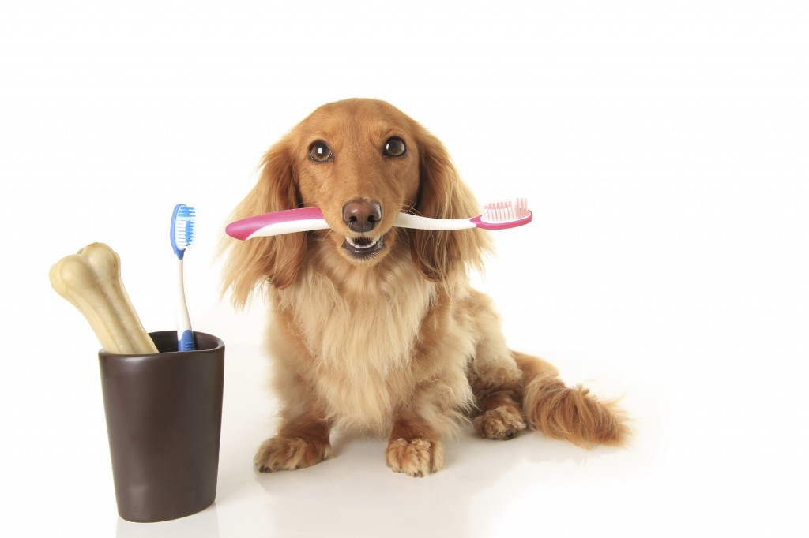

Уход за зубами
Для ухода за зубами собаки используют специальные таблетки, которые при разжевывании борются с темным налетом и не приятным запахом. Также используются кости, резиновые игрушки-жевалки, которые нужно грызть, они обладают теми же свойствами, что таблетки, плюс точат зубки и удовлетворяют потребность собаки, что-нибудь погрызть.
Зубная паста. Приучите собаку к ежедневной чистке зубов и избавьте себя и животное от проблем с зубным камнем и налетами в будущем. Для чистки используются щетки, которые одеваются на палец. Такие щетки продаются в любом зоомагазине. Будьте осторожны – есть риск остаться без пальца!
Для улучшения общего состояния животного используйте витамины, их необходимо применять курсом, согласно инструкции.
